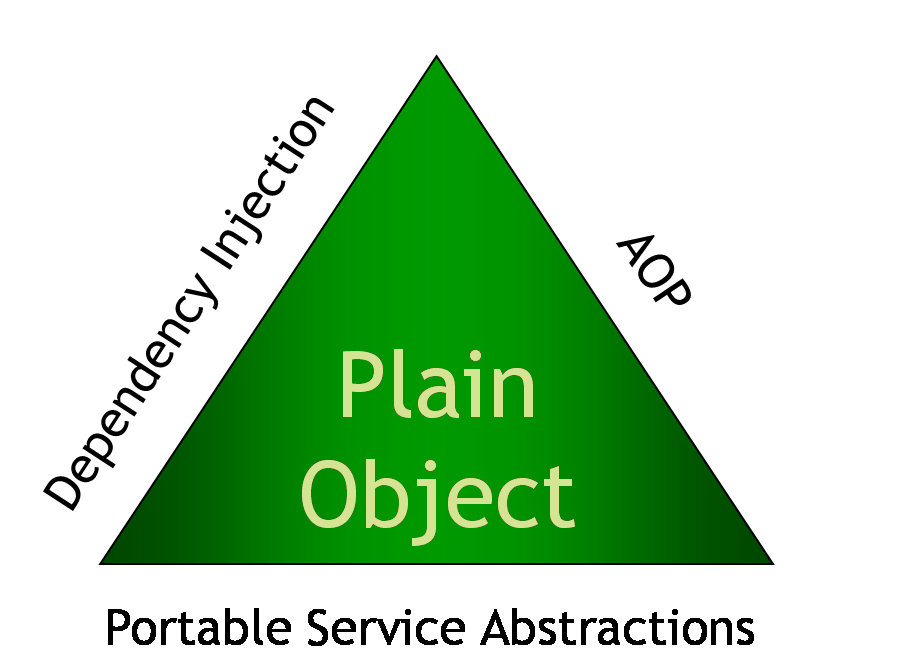

Webová vrstva od píky
Ivan Doležal
- www.generalidevelopment.com
- ivan.dolezal@gmail.com
- www.octopuss.sk
- @octopuss_svk
Doby dřevěné aneb každý nějak začínal
Rok 2003
tabulky a "ifrejmy" kam se podíváš
Rok 2005
kdo nemá Flash jakoby nebyl

Rok 2008
známe i Divy - přechod k semantickému webu
Rok 2010
bez Javascript efektů by to nešlo-dynamický web
Rok 2012
nevymýšlet znovu kolo - CSS frameworky
O čem to bude ?
- Spring MVC
- MVC na view vrstvě
- Neopakovat se
Spring MVC
- Principy Spring frameworku
- Spring MVC
- Nastavení Controlerů
- "Návratové typy obsahu"
MVC na view vrstvě
- Organizace javascriptových knihoven
- AMD
- Mustache Šablony
Neopakovat se
- Vlastní komponenty
- Dynamické CSS
- CSS frameworky
Principy Spring frameworku
www.springsource.org
Definice aplikačního kontextu
<?xml version="1.0" encoding="UTF-8"?>
<beans xmlns="http://www.springframework.org/schema/beans"
xmlns:xsi="http://www.w3.org/2001/XMLSchema-instance"
xsi:schemaLocation="http://www.springframework.org/schema/beans
http://www.springframework.org/schema/beans/spring-beans-3.0.xsd">
<bean id="..." class="...">
<!-- collaborators and configuration for this bean go here -->
</bean>
<!-- more bean definitions go here -->
</beans>Další Spring projekty
tedy jen některé
http://www.springsource.org/projects
Spring MVC
součástí Spring frameworku
- flexibilní
- drží se konvencí
- validace, bezpečnost...
Maven dependency
<dependency>
<groupId>org.springframework</groupId>
<artifactId>spring-web</artifactId>
<version>3.2.1.RELEASE</version>
</dependency>
Nastavení Controlerů
@RequestMapping("/items")
@Controller
public class ItemController {
@RequestMapping(value = "/{id}", produces = "text/html")
public String show(@PathVariable("id") final Long id, final Model uiModel)
{
uiModel.addAttribute("item", itemRepository.findOne(id));
uiModel.addAttribute("itemId", id);
return "items/show";
}
}
http://static.springsource.org/spring/docs/3.0.x/reference/mvc.html
Složitější definice
@Controller
public class NotesController extends AbstractController {
@Autowired
private NotesRepository notesRepository;
@RequestMapping(value = "/notes/{noteId}", method = RequestMethod.DELETE, produces = "application/json")
@ResponseBody
public JSONResponseEnvelope delete(@PathVariable("noteId") final Long noteId, final Model uiModel) {
notesRepository.delete(noteId);
return JSONResponseEnvelope.createSuccessResponse(noteId, messages.getMessage("ui.message.success.noteDelete"));
}
}
Návratové typy obsahu
často nepotřebujeme zobrazit jen prostý text, ale i strukturovaná data nebo obrázkyJSON výstup
anotace @ResponseBody
{
"responseStatus": "SUCCESS",
"statusCode": 200,
"messages": [
{
"messageFormat": "TEXT",
"message": "Note was added successfully"
}
]
}Výstup metody jako obrázek
@RequestMapping(value = "/image", method = RequestMethod.GET, produces = "image/jpg")
public @ResponseBody byte[] getFile() {
try {
//Retrieve image from the classpath.
InputStream is = this.getClass().getResourceAsStream("/test.jpg");
BufferedImage img = ImageIO.read(is);
ByteArrayOutputStream bao = new ByteArrayOutputStream();
// Write to output stream
ImageIO.write(img, "jpg", bao);
return bao.toByteArray();
} catch (IOException e) {
throw new RuntimeException(e);
}
}Organizace JS knihoven
- různé verze
- závislosti
- lazy loading
- require.js
AMD
nemá nic s mikročipy :)
- jak zapouzdřit kus kódu do užitečné jednotky a jak zpřístupnit jeho schopnosti ostatním,
- jak definovat závislosti na jiných jednotkách kódu.
Ukázka jednoduchého modulu
define(['jquery'] , function ($) {
_deleteEvent = function(e) {
var $li = $(this).parents("li");
$li.hide();
};
//Define the module value by returning a value.
return {
init : function() {
var node = this.init.arguments[0].node;
var $lis = $(node).find("li");
$lis.append(' <span class="delete">✖</span>');
$(node).on("click", ".delete", _deleteEvent);
}
};
});
HTML pro modul
<ul data-module="delete-row">
<li>Milk</li>
<li>Coffee</li>
<li>Muffin</li>
</ul>Šablony
- oddělení dat od způsobu zobrazení
- elegantní způsob jak dynamicky tvořit DOM
- cache a rendering na straně klienta
- vyber si vlastní
Mustache.js
- jednoduché na použití
- žádná složitá logika (není if,foreach)
Ukázka
Data v JSON{"responseStatus": "SUCCESS","statusCode": 200,
"messages": [
{ "messageFormat": "TEXT",
"message": "Note was added successfully"
}
]}<h1>{{responseStatus}} - {{statusCode}}</h1>
<ul>
{{#messages}}
<li>{{message}}</li>
{{/messages}}
</ul>Tadáá
Vlastní komponenty - zapouzdření HTML
- abstrakce nad HTML
- oddělení požadované funkcionality od implementace
- znovupoužitelnost
Generování tabulky
<table xmlns:c="http://java.sun.com/jsp/jstl/core">
<c:forEach items="${items}" var="item">
<tr>
<td>${item.name}</td>
<td>${item.price}</td>
</tr>
</c:forEach>
</table>Řešení - vlastní komponenta
<div xmlns:cust="urn:jsptagdir:/WEB-INF/tags">
<cust:table data="${items}" columns="name,price" labels="Name,Price" />
</div>Implementace komponenty
table.tagxDynamické CSS
LESS příklad
style.less.rounded-corners (@radius: 5px) {
-webkit-border-radius: @radius;
-moz-border-radius: @radius;
-ms-border-radius: @radius;
-o-border-radius: @radius;
border-radius: @radius;
}
#header {
.rounded-corners(20px);
}#header {
-webkit-border-radius: 20px;
-moz-border-radius: 20px;
-ms-border-radius: 20px;
-o-border-radius: 20px;
border-radius: 20px;
}LESS příklad
style.less@fontSize : 14px;
p { font-size: @fontSize;
a { text-decoration: none;
&:hover {
border-width: 1px;
font-size:@fontSize - 2;
}
}
}
p {font-size: 14px;}
p a {text-decoration: none;}
p a:hover {border-width: 1px; font-size: 12px;}CSS frameworky
- cross browser kompatibilita
- pro zákazníka i administrátora
- většinou hezké:)
Příklady
Děkuju za pozornost
materiály: https://github.com/octopuss/HIT2013/